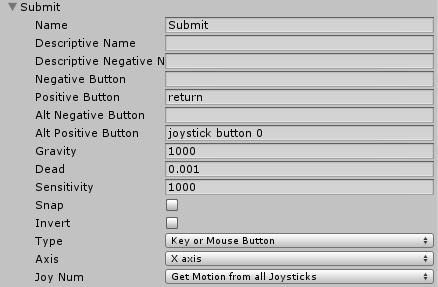
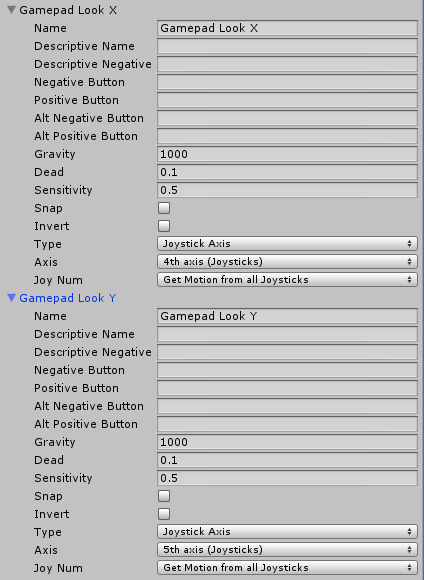
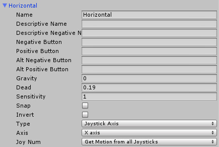
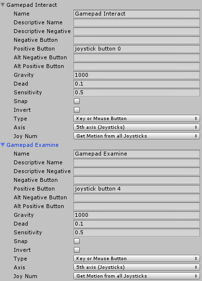
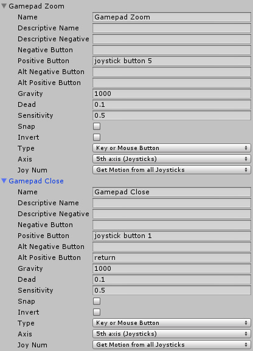

First Person Exploration Kit: XBox 360 Controller Update
Update Instructions
NOTE: As of version 1.1, these updates are included in the package. These instructions are for posterity, or for those who want to manually perform the update to projects that used v1.0 of the package.
Gamepad Inputs:
In Project Settings > Input, UPDATE the existing "Submit" input as follows:
Submit

In Project Settings > Input, ADD the following inputs:
Gamepad Look X and Y (for looking around)

Note: There's an existing "Horizontal" axis that should already work with the XBox 360 left analog stick. It looks like this:

Gamepad Interact and Examine

Gamepad Zoom and Close

Script Updates
Replace the following scripts with the updated versions:
- FPEInteractionManagerScript.cs (in Assets\FirstPersonExplorationKit\Scripts\)
- MouseLook.cs (in Assets\FirstPersonExplorationKit\Standard Assets\Characters\FirstPersonCharacter\Scripts\)
Inspector Changes
Once scripts have been replaced, changed the following Prefab Inpsector values (recommend that you just open demoScene.unity and update from there (don't forget to press "Apply" to update the prefab!):
- In FPEPlayerController, I've added "Flip Gamepad Y" flag to MouseLook to allow for gamepad right analog to have flipped Y axis as some people prefer that mode.
- In FPEEventSystem "Submit Button" Field should be changed to have the value "Gamepad Close". This allows Left Analog stick to change Journal buttons, and 'B' button to press them.
How to use the new controls:
- X: Interact
- B: Skip Journal, press Journal Buttons (Previous, Next, Close)
- Left Shoulder: Zoom in, or examine object if object is being held
- Left Analog: Move player
- Right Analog: Look around
Note that the on screen control hints have not been changed. This is really a style/art choice for your specific game. That said, there is a
wonderful free package of gamepad (and other) button icons on opengameart.org called "FREE Keyboard and controllers prompts pack" available
here: http://opengameart.org/content/free-keyboard-and-controllers-prompts-pack
I've used this a few times and it's pretty great.
List of Script Changes
FPEInteractionManagerScript.cs:
- When examining object, yield to gamepad if no mouse input
- Added "Gamepad Interact" button check to Interaction input logic
- Added "Gamepad Examine" button check to Examine input logic (2 places, for on and off)
- Added "Gamepad Close" button check to allow Audio Diary skip
- Added "Gamepad Examine" button check for camera zoom logic
MouseLook.cs:
- Added logic to yield to gamepad look if no mouse look input is given
If you have any additional questions or something doesn't work as described above please let me know. You can reach me at support@whilefun.com